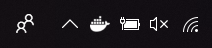
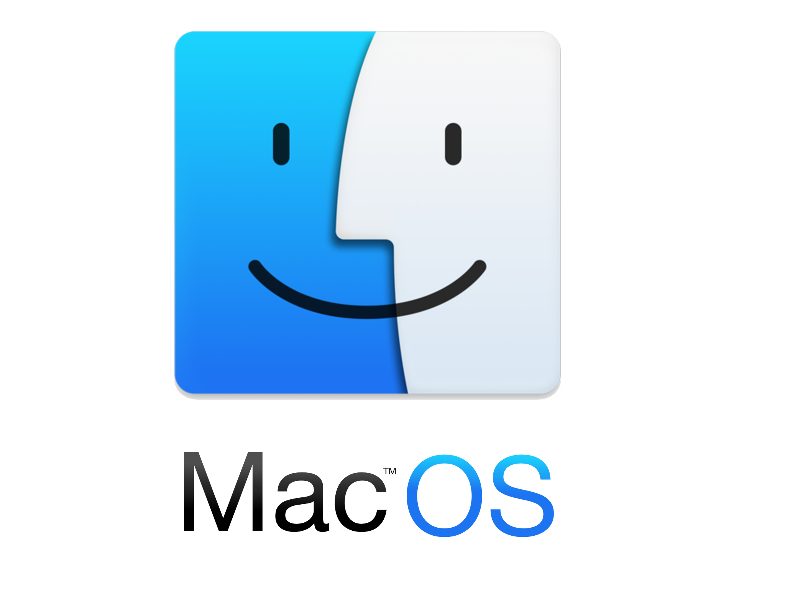

Installation de Docker
Sur Ubuntu
Sur Windows
Vérification de l'activation de la virtualisation

Installation de Docker Desktop
Double-cliquer sur le fichier
Docker Desktop Installer.exe,
Puis suivez les instructions d'installation.
Lancement de Docker
Chercher Docker dans le menu Windows, puis cliquez sur Docker Desktop

Validation de l'installation
Vous devez voir dans la barre de status, l'icône Docker apparaitre
Sur Mac
Installation de Docker Desktop
Double-cliquer sur le fichier Docker.dmg,
Puis faites un Drag&Drop de l'icône Docker.app vers le répertoire Application.

Installation de Docker Desktop
Double-cliquer sur le fichier Docker.app, pour démarrer Docker.

Autorisation de Docker Desktop
Une autorisation Système vous sera demandée, acceptez la.
Des privilèges sont nécessaires à l'installation de composants réseau et lien entre application Docker
Validation de l'installation
Vous devez voir dans la barre de status, l'icône Docker apparaitre